Raw (dd)
Copia cruda sector por sector, sin compresión ni metadatos propios. Universal — la lee cualquier herramienta forense, incluido dd/dcfldd en Linux.
Actividad 16 · Tercer parcial · Adquisición forense con FTK Imager
Adquisición forense bit a bit de una memoria USB utilizando AccessData FTK Imager, en formato Raw (dd), realizada en el Laboratorio de Informática Forense (LIF) de la UPSLP. El proceso quedó documentado de inicio a fin, con verificación de integridad por hash MD5 y SHA-1 sobre la imagen resultante.
01 / OBJETIVO Y ALCANCE
El análisis forense digital se divide usualmente en cinco fases: adquisición, preservación, análisis, documentación y presentación. Esta actividad cubre la primera de ellas: obtener una copia bit a bit de un dispositivo de almacenamiento sin modificar en absoluto los datos originales, utilizando siempre herramientas forenses adecuadas.
02 / METODOLOGÍA
FTK Imager permite generar la copia en distintos formatos de contenedor; para este ejercicio se utilizó Raw (dd) por ser el de lectura universal.
Copia cruda sector por sector, sin compresión ni metadatos propios. Universal — la lee cualquier herramienta forense, incluido dd/dcfldd en Linux.
Formato propietario de Guidance Software/EnCase: incrusta metadatos del caso, soporta compresión y verificación por CRC + hash integrados.
Formato de ASR Data, análogo al E01 (comprimido, segmentado, con hash embebido) pero orientado originalmente al ecosistema Linux.
Hashes MD5 y SHA-1 calculados automáticamente al finalizar, comparando el valor computado contra el valor de reporte.
03 / CONFIGURACIÓN DEL CASO
Datos registrados en FTK Imager antes de iniciar la adquisición, conforme a las instrucciones de la práctica:
Case NumberInfoCrim-01_21.11.2023
Evidence Number00 (Original Adq)
Unique DescriptionCNO IV - análisis de incidente de fraude bancario
ExaminerOrtega Jiménez Juan Francisco
NotesAdquisición realizada en LIF de la UPSLP
DestinoC:\Users\Usuario\Desktop\InfoCrim13\infocrim_OrtegaJimenezJuan
04 / MARCAS DE TIEMPO
Hora de iniciosábado 7 de noviembre de 2026, 23:30:22
Hora de términodomingo 8 de noviembre de 2026, 01:13:56
Tiempo transcurrido1:43:34 (1 h 43 min 34 s)
05 / RESULTADOS FINALES
Al concluir, FTK Imager reportó los siguientes resultados y generó automáticamente un archivo .txt con el detalle completo del proceso:
Sectores copiados61,440,000
Hash MD5608d9b082e326ed9f4090734464c2c27
Hash SHA-1695840919a736968fbedf83945ee9006a6ea1961
Archivos generados21 — 20 fragmentos (.001 a .020) + 1 archivo .txt
61,017,088 – 61,439,999El dispositivo origen presentó sectores no legibles en ese rango; su contenido fue sustituido por ceros en la imagen, conforme al procedimiento estándar. La verificación posterior sobre la imagen generada confirmó "No bad blocks found in image" y la coincidencia exacta de ambos hashes (Computed = Report).
06 / EVIDENCIAS
Secuencia documentada desde la apertura de la herramienta hasta la verificación final de integridad y el archivo de registro generado automáticamente.
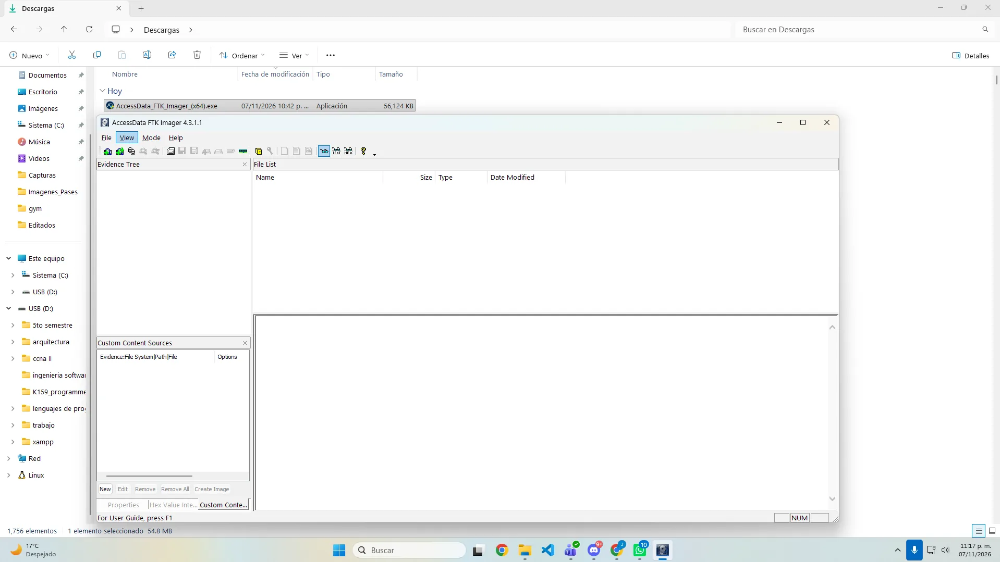
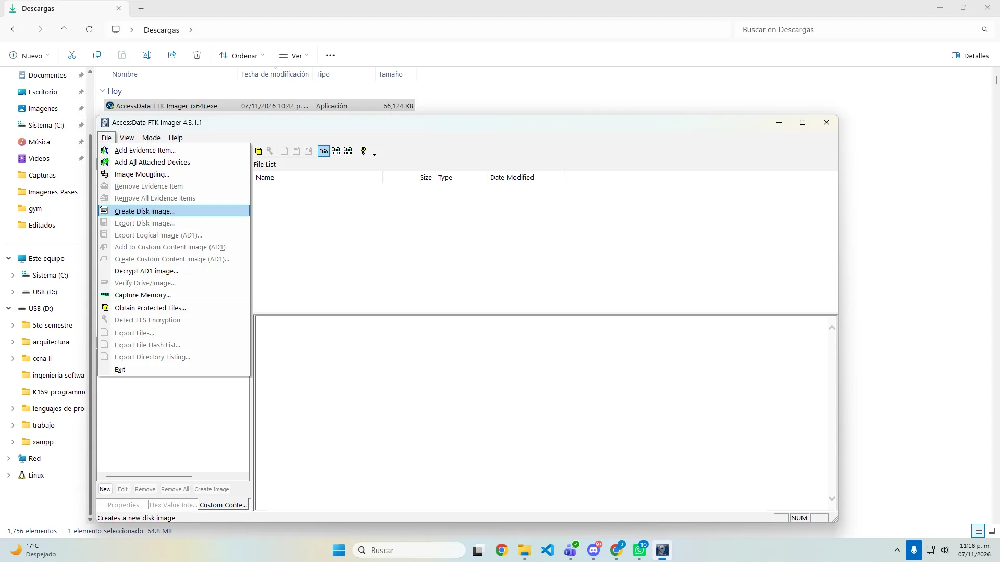
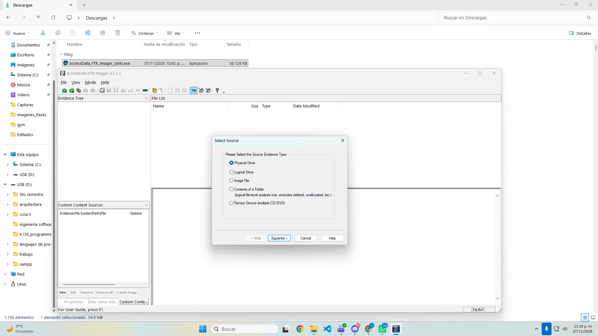
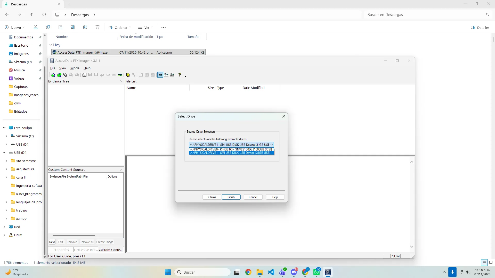
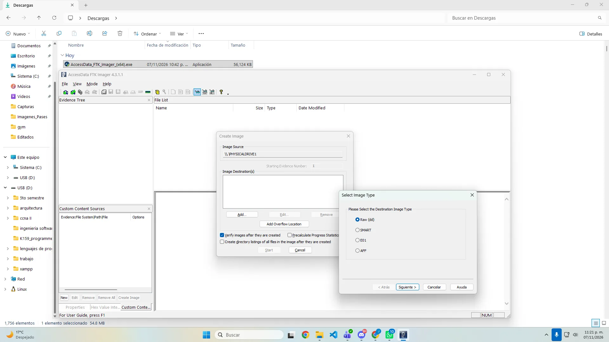
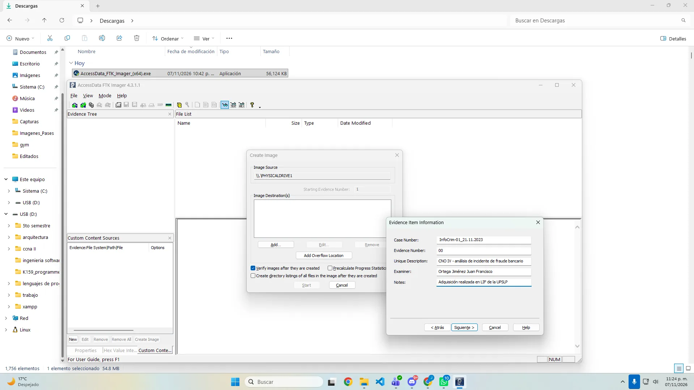
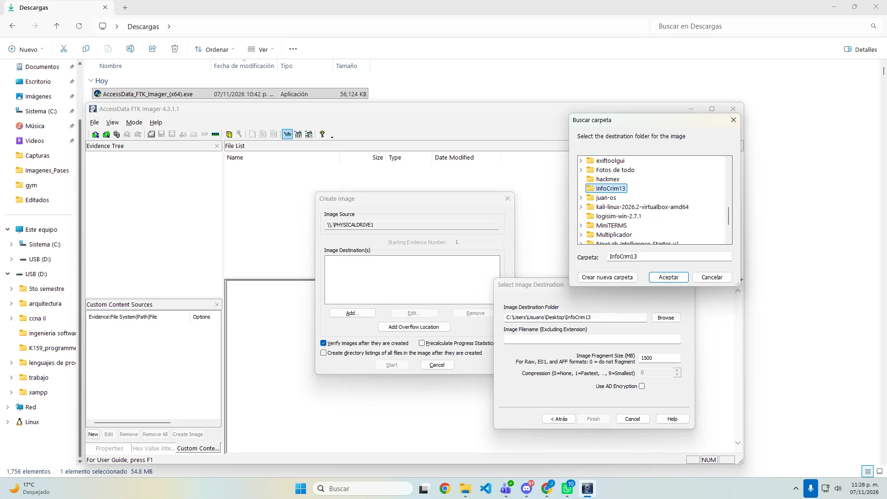
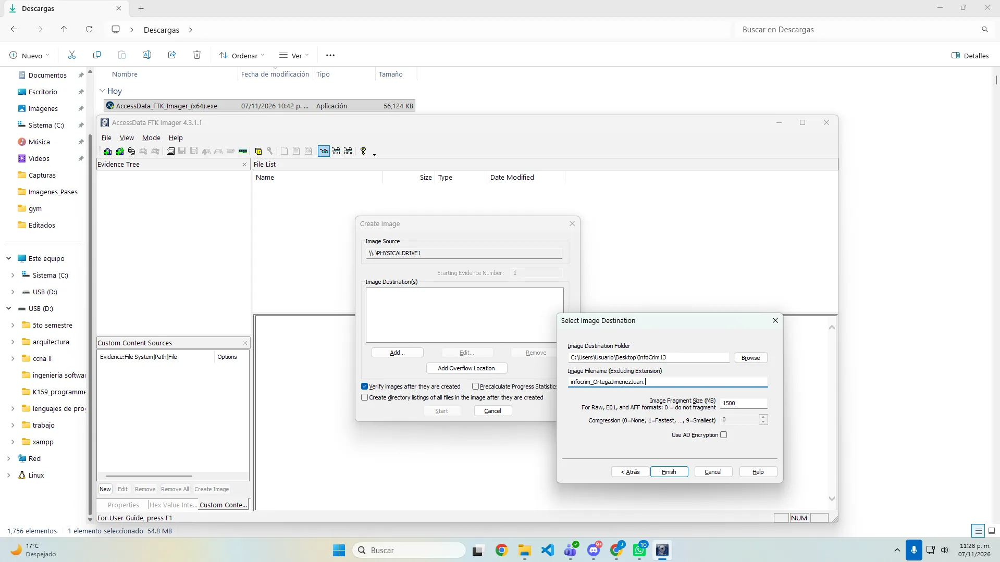
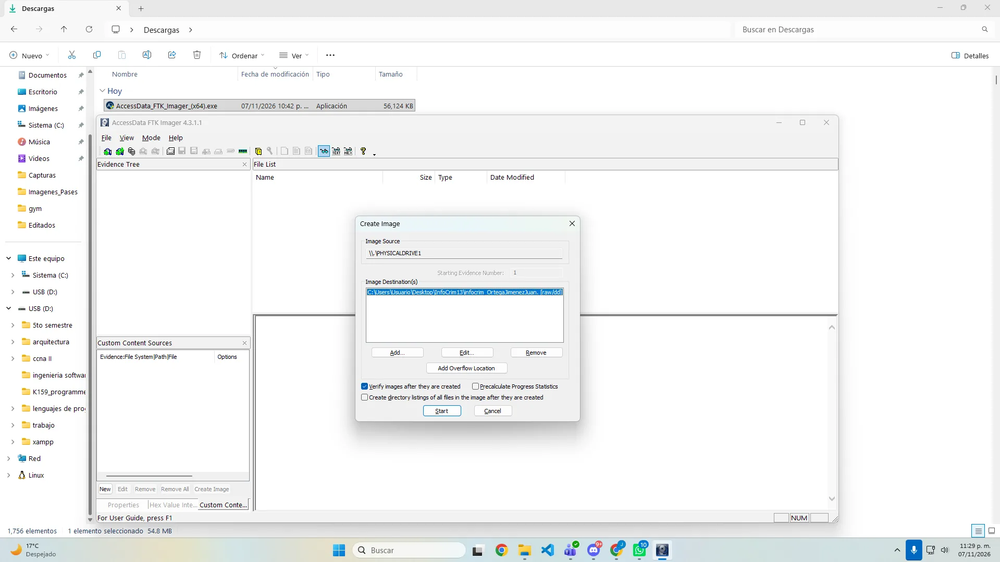
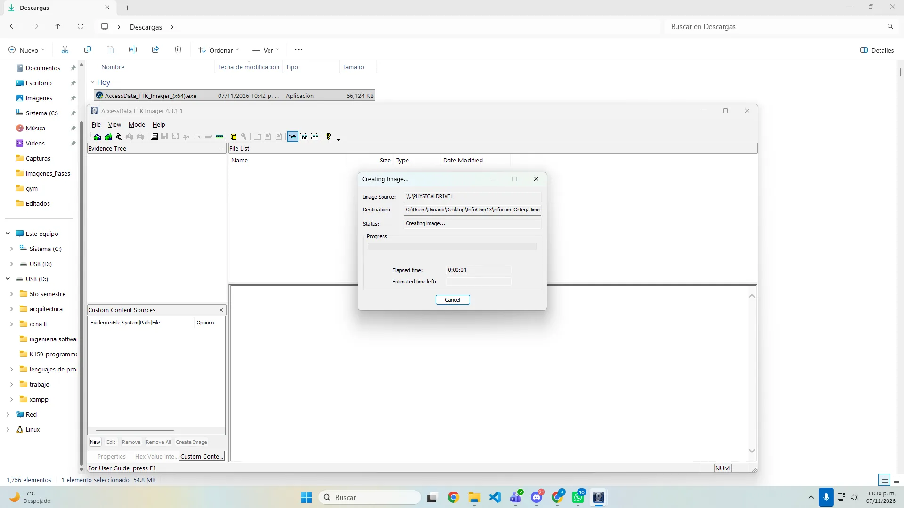
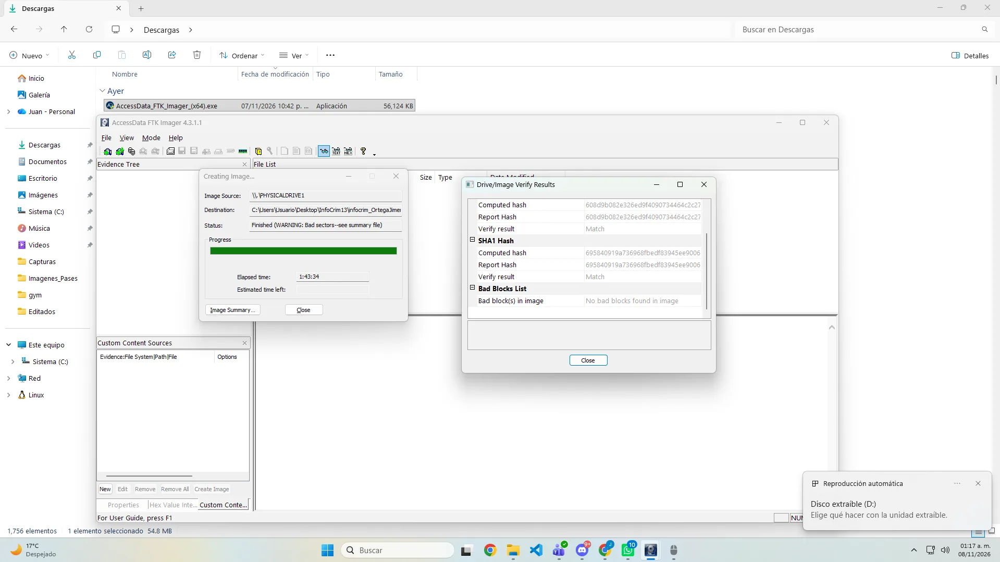
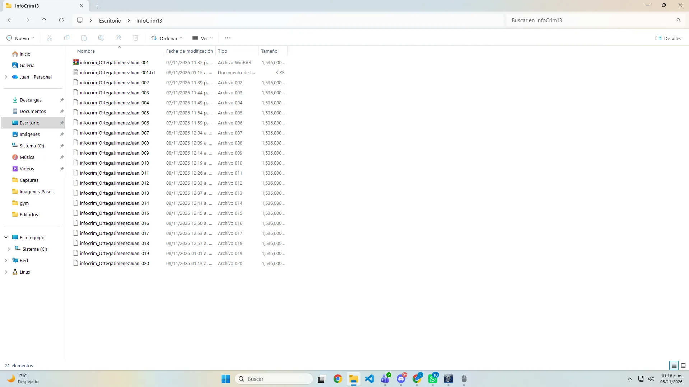
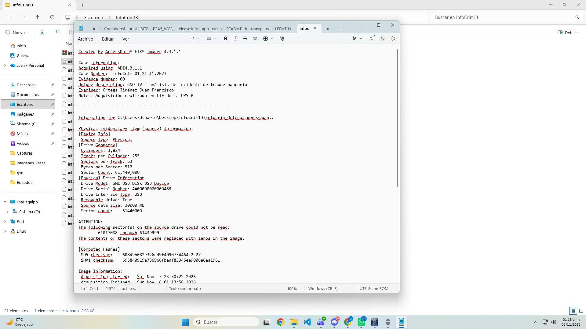
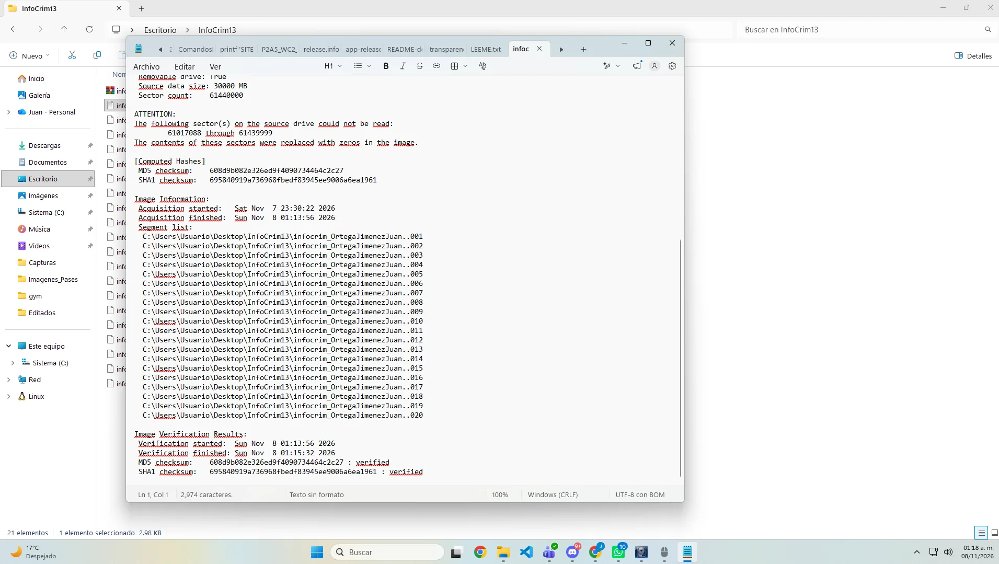
07 / ARCHIVOS ENTREGABLES
08 / CONCLUSIÓN
La fase de adquisición es, ante todo, un ejercicio de disciplina: el dispositivo de origen se trata exclusivamente como fuente de lectura y nunca se escribe sobre él. FTK Imager documentó automáticamente cada paso —desde la configuración del caso hasta los hashes finales— incluyendo una advertencia honesta de sectores no legibles en el USB, que la verificación posterior confirmó no afectó la integridad de la imagen resultante. Con la imagen adquirida y verificada queda sentada la base para las siguientes fases del análisis forense: preservación, análisis, documentación y presentación.